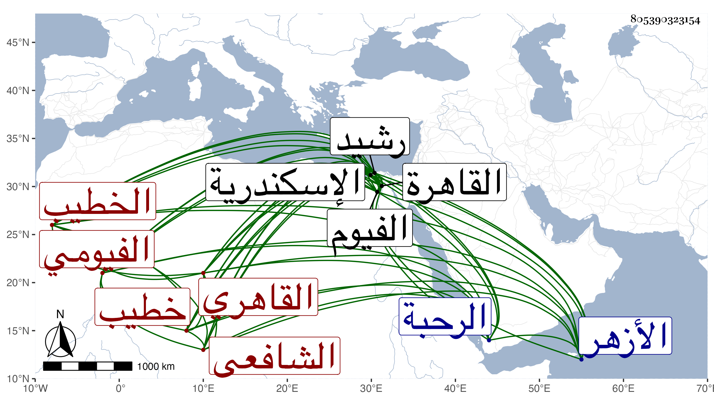

0902Sakhawi.DawLamic.ITO20230111-ara1.EIS1600.805390323154
Biography ID: 805390323154
69
محمد بن محمد بن أحمد بن عبد النور بن أحمد المحب بن الشمس ابن البهاء أبي الفتح الفيومي ثم القاهري الشافعي الخطيب ابن أخي الصدر محمد ابن أحمد خطيب الفخرية وسبط الشمس العاملي . ولد في جمادى الآخر سنة اثنتين وعشرين بالقاهرة ونشأ بها فحفظ القرآن وغيره وقرأ على شيخنا في البخاري وكذا على السيد النسابة والعز عبد السلام البغدادي وحضر الدروس عند جماعة وقرأ على العامة في الأزهر وغيره بعد جده وخطب نيابة عنه باشرفية الخانقاة قبل أن تطلع لحيته وحكى ذلك للواقف فأرسل جماعة من خواصه منهم كاتب السر فصلوا هناك سمعوا خطبته فوقعت منهم موقعا ثم رجعوا وأعلموه وأنه ابن ابنته فوافق على ذلك ، وتكسب بالشهادة عن حبس الرحبة وغيره ، وكتب بخطه الكثير ومن ذلك القول البديع وحمله عنى ، وحج وجاور ودخل الفيوم ورشيد واسكندرية وخطب بأكثرها بل استمر ينوب في الخطابة بالجيعانية وتميز فيها مع تودده وسكونه .
